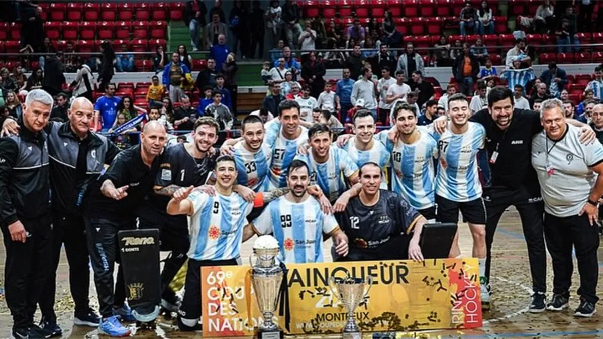
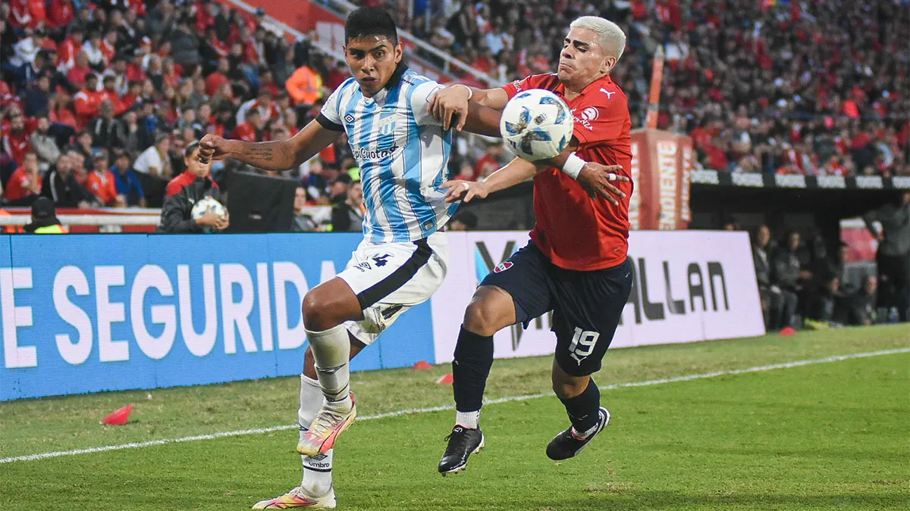

Noticias Políticas
La nueva relación de Milei con China: viaje de la canciller, swaps y temas espinosos
El Presidente encomendó a Mondino una visita oficial a Beijing: inversiones, defensa y geopolítica entre los nuevos ejes del vínculo del Gobierno con China.
La empresa más difícil de privatizar para Milei es el Banco Nación
La búsqueda del oficialismo para que una de las firmas públicas de mayor de peso en la Argentina se convierta en una Sociedad Anónima es cuestionada por ciertos legisladores. Quiénes ya participan de la entidad y trabajan en su reestructuración.
Noticias Deportivas
La Selección argentina, con tres mendocinos, ganó la Copa de las Naciones de hockey sobre patines
La Selección argentina de hockey sobre patines se consagró campeona de la Copa de las Naciones en Montreux, Suiza.
Copa de la Liga: los resultados y las posiciones
Este domingo Independiente Rivadavia perdió por 2 a 1 ante Banfield e Independiente de Avellaneda empató 1 a 1 con Atlético Tucumán, por la 12ª fecha de la Copa de la Liga.